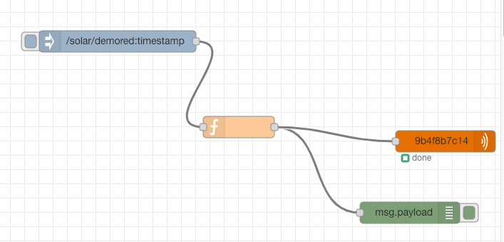

Virtual IoT Device on Cloud
Virtual IoT Device on Cloud
IoT is very hot in these days. I believe in the future, all the devices in the home will have some connections with the internet. We could easily get the stream data from these devices and do some analysis to find the trend or abnormal event. Thanks for 5G and IPV6, it is possible to have enough addresses and high speed network.
There are some key skills that are required in the companies. The following sentences are copied from related job description.
- Analyze and improve efficiency, scalability, and stability of various system resources.
- Design, architect and implement a data flow platform for efficient data processing and machine learning.
- Hands-on experience with building big data ingestion pipelines using Hadoop, HBase, Kafka, Elastic Search etc
- Build data pipelines and ETL from heterogeneous sources including IoT using Kafka, Flume, Sqoop, Spark Streaming, etc, and your solutions will support both real-time or near real-time applications
- IoT Services: AWS IoT Device SDK, AWS IoT Device Gateway, AWS IoT API, AWS IoT Analytics, Device Registry, Device Shadow, and IoT Rules Action
- Data and Analytics Services: Kinesis Stream, Kinesis Analytics, Kinesis Firehose, Elastic Search, Lambda, API Gateway, Elastic Map Reduce (EMR), Redshift, Amazon Quicksight, S3, and CloudWatch
- Thorough understanding and experience with IoT protocols like MQTT, AMQP and HTTPS
- Good understanding of concepts like Device Provisioning & Management, Device Twin, Edge Analytics and demonstrable application of these concepts in past projects
- Understanding and experience with Cloud IoT platforms specifically Azure (Azure IoT hub, Azure IoT Edge, Stream Analytics, CosmosDB, Azure Functions, Azure AppService etc) and ability to demonstrate experience architecting cloud first highly scalable applications
We could see many companies want employee could design and implement data pipelines.
Use cases
- Sensors in transportation vehicles, industrial equipment, and farm machinery send data to a streaming application. The application monitors performance detects any potential defects in advance and places a spare part order automatically preventing equipment downtime.
- A solar power company has to maintain power throughput for its customers or pay penalties. It implemented a streaming data application that monitors of all of the panels in the field, and schedules service in real time, thereby minimizing the periods of low throughput from each panel and the associated penalty payouts.
- Predictive maintenance: Automatically predict when equipment needs maintenance; optimize equipment performance in real time; predict downtime; detect anomalies; and track device status, state, and location.
- Smart Cities & Buildings: Build a comprehensive solution that spans billions of sensors and edge devices, and bring a new level of intelligence and automation to entire homes, buildings, or cities.
AWS
 In AWS, there is an IoT-core component could help us develop IoT applications. We could create a device in it and download credential files to register a device. The detailed instruction could find here. Then we use these credential and certification to configure the MQTT client in the IoT device.
In AWS, there is an IoT-core component could help us develop IoT applications. We could create a device in it and download credential files to register a device. The detailed instruction could find here. Then we use these credential and certification to configure the MQTT client in the IoT device.
If we want to use a simulator for IoT device, we could use the following options:
- IoT device simulator
- Lambda
- Node-red
IoT device simulator
The detailed instruction on how to use this could be found here. In short, we can download a template and start it with CloudFormation. This contains many things:
- Amazon CloudFront
- S3
- Lambda
- AWS Fargate (ECS containers)
After starting all the components, we can create a root account for the Virtual device web console. Then we can create new virtual device in the front end. It is easy to use and we can define attributes for different device. We can even create a virtual car in it. When the virtual device is started, we could set time to simulate the data. It is connected to IoT-core automatically, we could get stream data from IoT-core with the topic. All things are well defined in this method.
The drawback for this method is we could not play our own data. The only simulated data is randomly from a range or from a list. We could not set a function or read data from other resources to send them to IoT-core. All codes for virtual device could be found on Github. One way to solve the problem is to fork that project and change the base code in the device part. Then we could change the CloudFormation template to use our own code.
Lambda
This is another easier method to start virtual device. The detailed instruction could be found here. We could see a source code mentioned in the blog. But because I am in the east coast, I need to modify some zone code and use my own S3 to finish many steps.
In the template, it will also start an Elastic Search instance for visualizing published data. Because we do not need them, we could just deleted all related codes. The general idea for the function is to read data from S3, create a MQTT client and send data via MQTT to IoT-core. My modified version code could be found here.
Node-Red
Node-RED is a flow-based development tool developed originally by IBM for wiring together hardware devices, APIs and online services as part of the Internet of Things.
Node-RED provides a browser-based flow editor, which can be used to create JavaScript functions. Elements of applications can be saved or shared for re-use. The runtime is built on Node.js. The flows created in Node-RED are stored using JSON.
It is open sourced and has many library to use. We could use it as a virtual device and connect to various cloud platform. For example, we could create the following flow.

In the beginning, we could decide which to inject into the system, then using a function module to manipulate the data. In the end, we use a AWS-MQTT output module. Here we need to configure a new device with credential files from IoT-core. We could view data in IoT-core with the right topic.